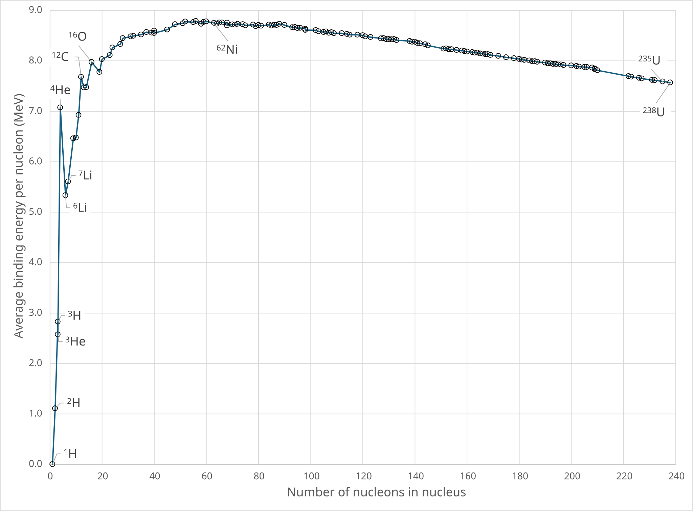

Què passa dins del nucli?
1
Ajust de la reacció
El nombre màssic A compta nucleons. El nombre atòmic Z compta la càrrega nuclear. Tots dos s’han de conservar.
Reactius
=
Productes
2
Defecte de massa i energia
| Costat | Espècie | Massa (u) |
|---|
Conceptes clau i errors habituals

- En l’ajust nuclear, electrons, positrons, neutrins i fotons s’escriuen també amb A = 0.
- Per a l’electró β⁻: ; per al positró β⁺: .
- El neutrí i l’antineutrí tenen i .
- Les masses atòmiques tabulades corresponen a àtoms neutres; el producte immediat d’una desintegració β pot estar ionitzat.
- La massa no desapareix: la diferència es transforma en energia cinètica, radiació i energia de retrocés.
- Una emissió γ no canvia A ni Z: només redueix l’energia interna del nucli.
- La corba d’energia d’enllaç explica per què la fusió (nuclis lleugers) i la fissió (nuclis molt pesats) poden alliberar energia: els productes queden més a prop del màxim (prop del Fe).
El defecte de massa fora del nucli
Exemple resolt: quant pesa menys el sistema Terra–Lluna?
El defecte de massa no és una particularitat de les reaccions nuclears: apareix sempre que un sistema està lligat. La Lluna orbita lligada a la Terra, és a dir que l’energia mecànica total del sistema és negativa, i per tant el conjunt ha de tenir menys massa que les dues peces separades i en repòs. Calculem quanta menys i comparem-ho amb el defecte d’una reacció nuclear.
| Magnitud | Símbol | Valor |
|---|---|---|
| Constant de gravitació universal | 6,674·10⁻¹¹ N m² kg⁻² | |
| Massa de la Terra | 5,972·10²⁴ kg | |
| Massa de la Lluna | 7,346·10²² kg | |
| Semieix major de l’òrbita lunar | 3,844·10⁸ m | |
| Velocitat de la llum | 2,998·10⁸ m/s |
La Lluna es mou a uns 1,02 km/s: el sistema té energia cinètica, però l’energia potencial negativa és el doble de gran, i el balanç és el que fa que el sistema estigui lligat i tingui defecte de massa.
Defecte de massa absolut
4,24·10¹¹ kg
424 milions de tones: del mateix ordre que la massa de tota la humanitat junta.
Defecte de massa relatiu
7,01·10⁻¹⁴
Un 0,000 000 000 007 %: caldria pesar el sistema amb catorze xifres significatives.
Energia per separar-los
3,81·10²⁸ J
El que consumeix tota la humanitat en uns 60 milions d’anys.
La mateixa idea a tres escales
| Sistema lligat | Tipus d’enllaç | Energia d’enllaç | Δm (kg) | Δm / m |
|---|---|---|---|---|
| ⁴He a partir de 2 ¹H + 2 n | nuclear | 28,3 MeV | 5,04·10⁻²⁹ | 7,53·10⁻³ |
| H₂O a partir de 2 H + O | químic | 9,50 eV | 1,69·10⁻³⁵ | 5,66·10⁻¹⁰ |
| La Terra amb ella mateixa | gravitatori | 2,24·10³² J | 2,49·10¹⁵ | 4,18·10⁻¹⁰ |
| Terra + Lluna | gravitatori | 3,81·10²⁸ J | 4,24·10¹¹ | 7,01·10⁻¹⁴ |
La xifra que compta és la relativa. En quilograms, el defecte del sistema Terra–Lluna (4,24·10¹¹ kg) és unes 10⁴⁰ vegades més gran que el de l’heli (5,04·10⁻²⁹ kg). En termes relatius, en canvi, és unes 10¹¹ vegades més petit: 7·10⁻¹⁴ contra 7,5·10⁻³. Les xifres absolutes no decideixen res; el que diu si un defecte de massa és mesurable és sempre .
Per això a l’escala nuclear el defecte és el protagonista i a l’escala gravitatòria és indetectable: la massa de la Terra la coneixem, com a molt, amb una incertesa relativa de 2·10⁻⁵, heretada de , que és la constant fonamental que sabem amb menys precisió. L’efecte que busquem és unes 300 milions de vegades més petit que aquesta incertesa. No és que no hi sigui: és que no hi ha cap balança capaç de veure’l.
Model i hipòtesis del càlcul
- Problema de dos cossos puntuals aïllats: no hi entren el Sol, la resta de planetes ni les marees.
- Òrbita kepleriana amb el semieix major, de manera que és exacta tot i que l’òrbita és una el·lipse ().
- No hi comptem l’energia de rotació de la Terra ni de la Lluna, que també contribueixen a la massa del sistema.
- Les masses tabulades ja inclouen el defecte de massa de cada cos amb ell mateix; aquí calculem només el que hi afegeix l’enllaç mutu.
- El defecte és una propietat del sistema, no d’un dels dos cossos: no es pot dir que «falti» massa a la Lluna.
- L’energia d’enllaç de la Terra amb ella mateixa s’ha calculat amb el model d’esfera homogènia (); la Terra real, més densa al centre, s’acosta a 2,5·10³² J.